How to build a Slackbot with Kotlin
One day at my day job, I noticed that there were a couple of services we used that anytime an event happened there was a very manual process for the developer to copy paste data into a Slack channel for others to be aware of the issue. I thought there had to be a better way to automate this whole process and prevent a developer from having to do this tedious task. That was when I came up with the idea of creating a Slackbot application to do this. So in this article I will describe the process I went through to create a Slackbot using Ktor and webhooks that can post messages to your Slack channel of choice and how to deploy to Heroku. For this example, we will be using Github webhooks to supply data to our Slackbot but the same principal applies to your service of choice that offers webhooks.
Setup
Initialize Project
- First download IntelliJ IDEA CE and install for your development platform.
- Once installed, click configure -> plugins. Then search and install the Ktor plugin.
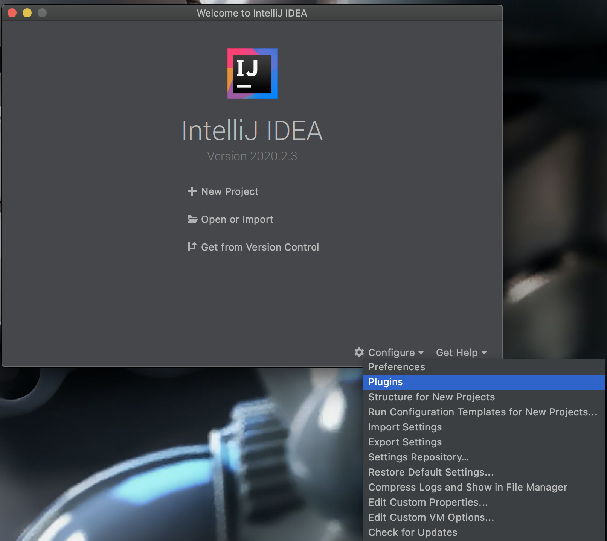
- Create a new project and select Ktor in the side bar. For the sake of this tutorial, we are going to use the GSON library for JSON serialization. But this is swappable with other JSON serializers of your choosing.
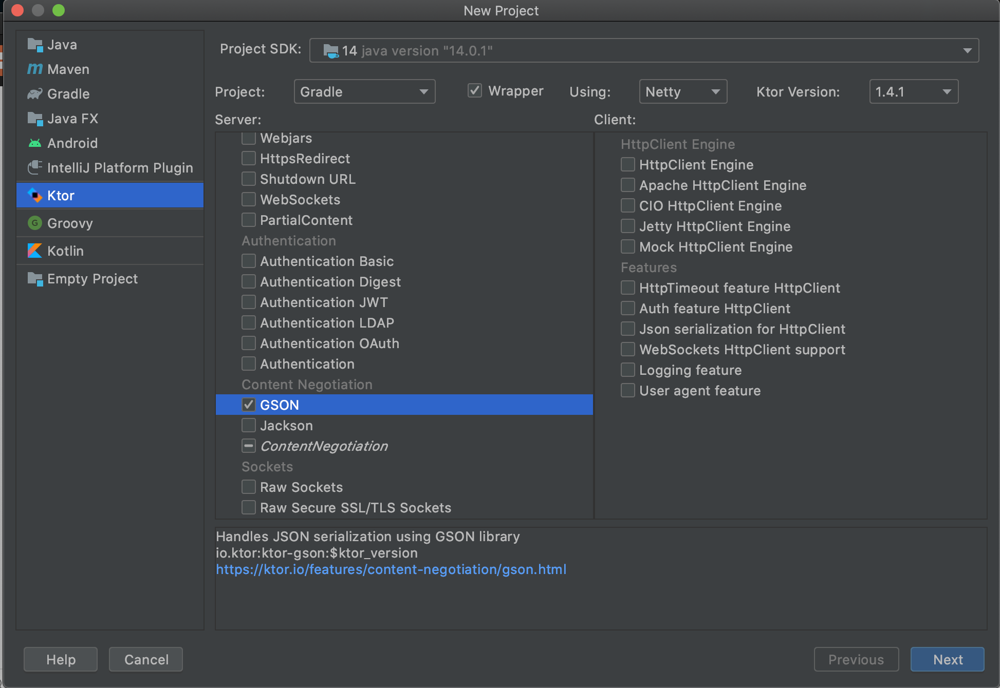
After giving your project a name and finishing the setup, you should be able to run the project with the following command and open up your browser to http://0.0.0.0:8080.
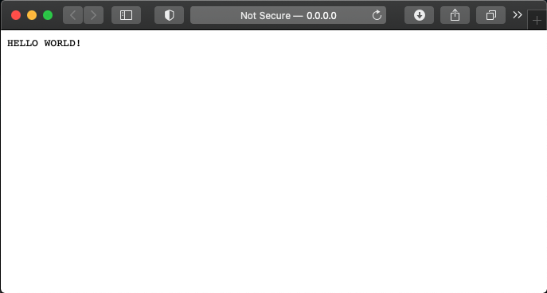
Create a Slack Bot App
Go to Slack's API website and create a new app. Give a name for your bot and the workspace that this bot will have access to.
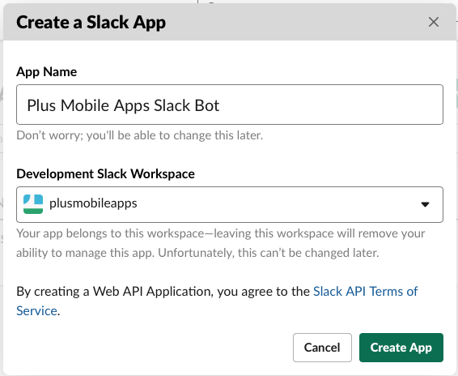
Under OAuth and Permissions, we need to give our bot the permission to write to our Slack channels so go ahead and add the following permission.
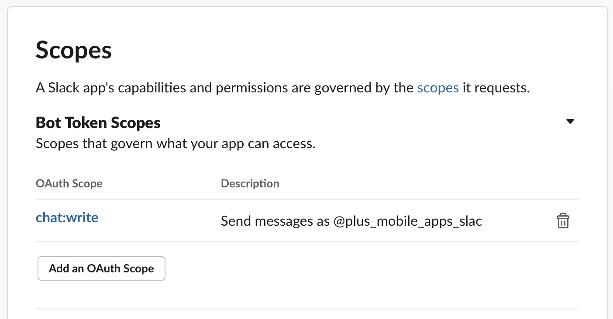
At the top of this page, you should now be able to install this bot to your workspace.
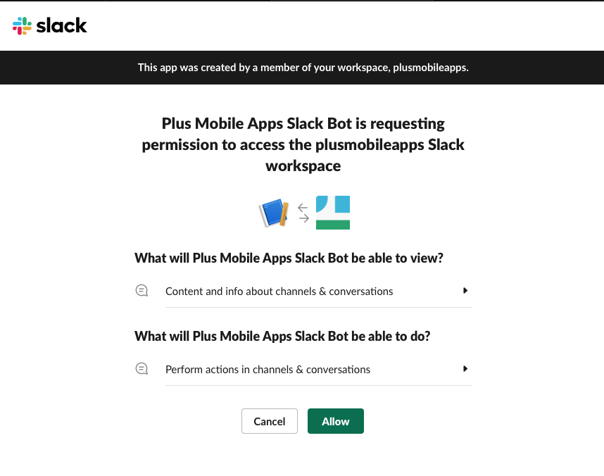
Now that you have installed the bot to the workspace, it should land you back on OAuth and Permissions page with a token that we will use later to authenticate with our Slack instance to post messages. This key should be kept private and not checked into any repository which we will discuss in a bit how to keep this secret.
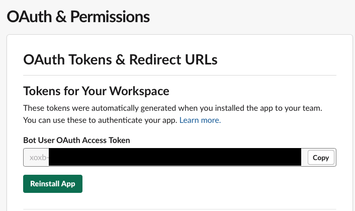
Add Java Slack SDK
Now we will add the Java Slack SDK to our project. First open up the build.gradle file, and add the following three lines to the dependencies block.
implementation "com.slack.api:slack-api-client:$slack_version"
// Add these dependencies if you want to use the Kotlin DSL for building rich messages
implementation "com.slack.api:slack-api-model-kotlin-extension:$slack_version"
implementation "com.slack.api:slack-api-client-kotlin-extension:$slack_version"
Then in gradle.properties we can create the variable for the version.
Now sync gradle and the Slack Java SDK should be accessible. If you have any trouble setting this up, the official instructions from Slack can be found here.
Posting Messages
Before we can post any messages, lets now add the Slack bot token to our project as an environment variable since you should never be checking in api tokens directly to your repository. Click on the gradle configuration in the top toolbar, and edit configurations. Then click on the right icon of environment variables and click the plus button to add an environment variable.
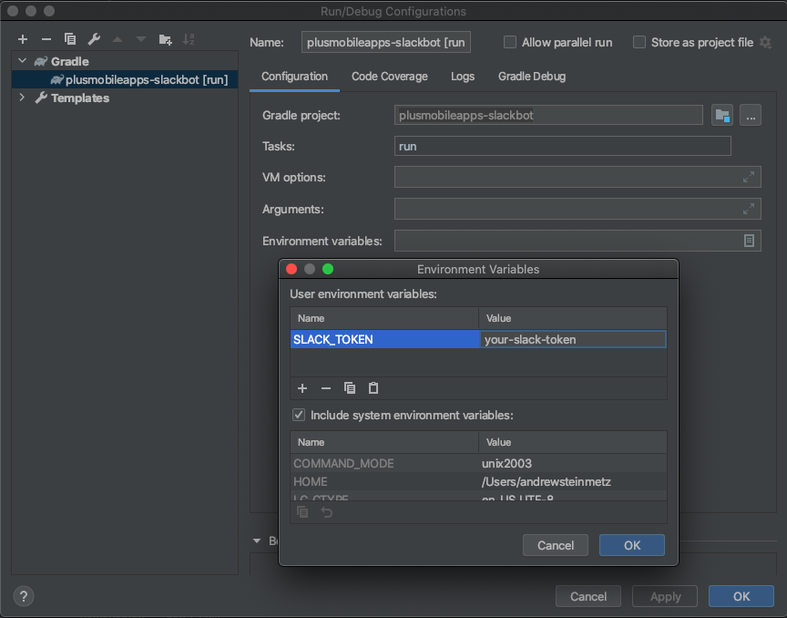
Our bot doesn't have permissions to join channels, so to prevent the not_in_channel error add the bot by @ it in the slack channel you want to post a message to. @Plus Mobile Apps Slack Bot in the #general channel.
To create a simple message, lets create a new file called HomeRoute. Here we will create an extension function on Route which will post a simple message anytime the home page is retrieved.
fun Routing.homeRoute() {
get("/") {
val token = System.getenv("SLACK_TOKEN")
val slack = Slack.getInstance()
val response = slack.methods(token).chatPostMessage {
it.channel("#general")
.text("Hello :wave:")
}
call.respondText("Response is: $response")
}
}
Don't forget to add this function to your routes on the Application.kt file.
Now run the gradle configuration in IntelliJ and go http://0.0.0.0:8080. This route should now trigger a message being sent to the general channel.
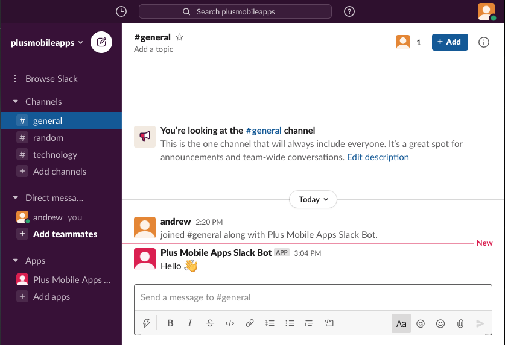
Deploy to Heroku
If you don't have a Heroku account yet, go to the website and create one. Once signed in, create a new app in the top right and give it a name of your choice. Then you will need to install the Heroku CLI in order to push your code. Now login to your Heroku account through the CLI and add the Heroku git remote. (This name should be under the deploy tab on Heroku if you forget the name of of your app.)
Now go into the settings of your Heroku app and we will add the Slack token from earlier.
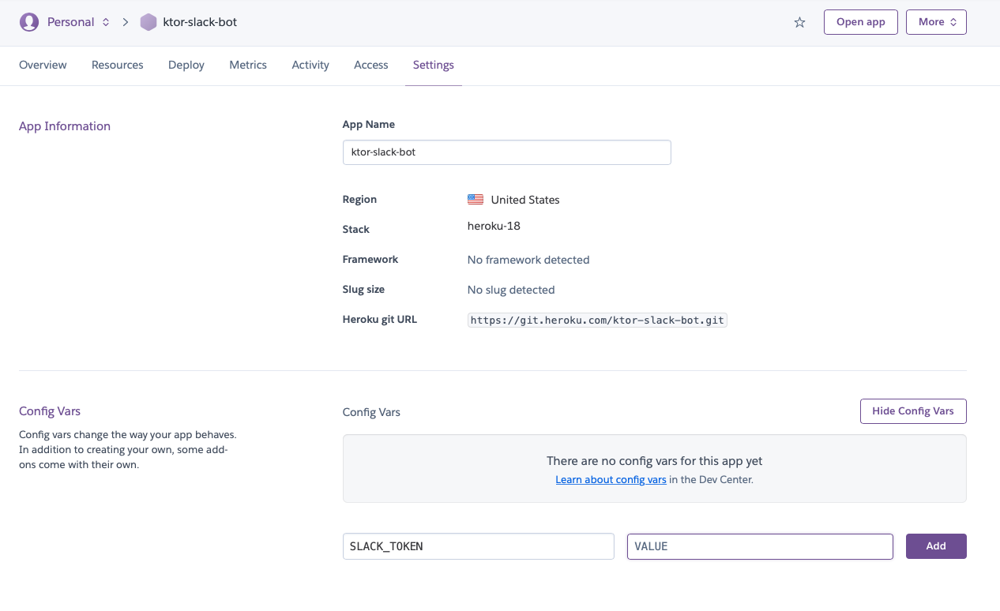
Heroku itself is not always going to run on port 8080 and actually passes this port number as an environment variable, so the application needs to be tweaked to take a PORT variable.
fun main(args: Array<String>) {
val port = System.getenv("PORT").toIntOrNull() ?: 8080
embeddedServer(Netty, port) {
routing {
homeRoute()
}
}.start(wait = true)
}
Now in the build.gradle file, the entry point to the app needs to be updated with the mainClassName. We are also going to add two more tasks while we are here called jar and stage. Jar will package the app into an executable file and stage is needed by Heroku which is run when deploying your app.
mainClassName = "com.plusmobileapps.ApplicationKt"
jar {
manifest {
attributes 'Main-Class' : "com.plusmobileapps.ApplicationKt"
}
from { configurations.runtimeClasspath.collect { it.isDirectory() ? it : zipTree(it) } }
}
task stage {
dependsOn jar
}
Next, there is a special file we will make in the root of our project called Procfile, this is what tells Heroku how to run our app once it is deployed. Add the following to this file which will run the jar file that is generated from the stage task.
To run Heroku locally, create a .env file in the root of the project folder where we will specify the SLACK_TOKEN and PORT variables. Don't forget to add the .env file to your .gitignore file to avoid checking in your secrets to your version control.
Then run the stage task and Heroku local command.
After validating everything is working locally, now you can finally deploy your Slackbot to Heroku by pushing it to the Heroku remote which will kick off the stage task. The url where your app is deployed will be printed in the console at the end of the deployment. So for this app, if you type https://ktor-slack-bot.herokuapp.com/ into your browser you will kick off the simple message to the #general channel from the Slackbot.
git push heroku master
Enumerating objects: 10, done.
Counting objects: 100% (10/10), done.
Delta compression using up to 16 threads
Compressing objects: 100% (5/5), done.
Writing objects: 100% (6/6), 782 bytes | 782.00 KiB/s, done.
Total 6 (delta 3), reused 0 (delta 0)
remote: Compressing source files... done.
remote: Building source:
remote:
remote: -----> Gradle app detected
remote: -----> Installing JDK 1.8... done
remote: -----> Building Gradle app...
remote: -----> executing ./gradlew stage
remote:
remote: > Task :compileKotlin
remote: w: /tmp/build_c370990d/src/Application.kt: (16, 24): Parameter 'testing' is never used
remote:
remote: > Task :compileJava NO-SOURCE
remote: > Task :processResources
remote: > Task :classes
remote: > Task :inspectClassesForKotlinIC
remote: > Task :jar
remote: > Task :stage
remote:
remote: BUILD SUCCESSFUL in 21s
remote: 4 actionable tasks: 4 executed
remote: -----> Discovering process types
remote: Procfile declares types -> web
remote:
remote: -----> Compressing...
remote: Done: 67.9M
remote: -----> Launching...
remote: Released v5
remote: https://ktor-slack-bot.herokuapp.com/ deployed to Heroku
remote:
remote: Verifying deploy... done.
To https://git.heroku.com/ktor-slack-bot.git
+ 6032313...ab7fa93 master -> master (forced update)
All of the changes needed to deploy can be found in this commit.
Listen for web hooks to post messages
The application until this point is pretty simple, but now that the application is deployed there is a URL you can use to register for web hooks. For this example, we will use Github web hooks from this repository which you can register in the settings section of the repository -> web hooks.
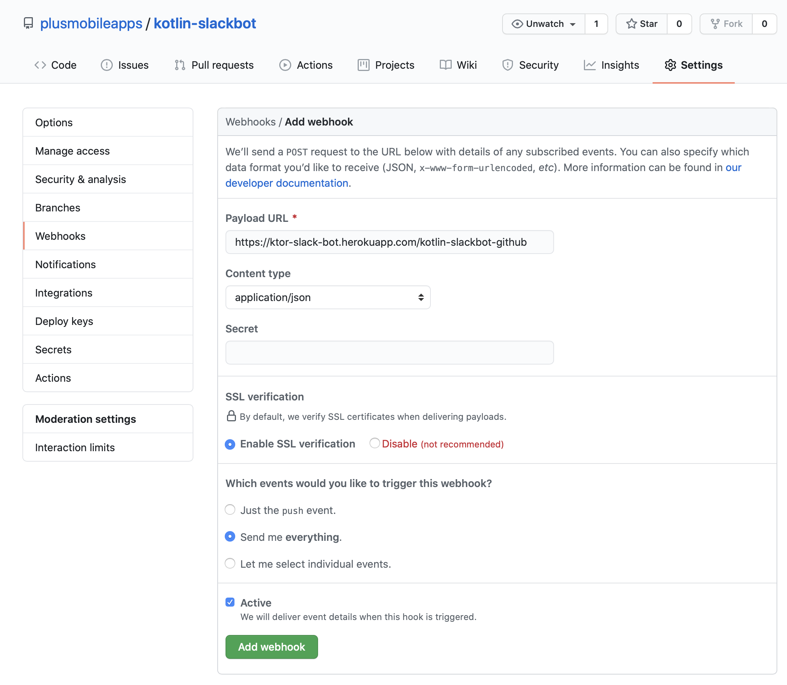
To test what data this endpoint will be receiving, I use a service called Beeceptor which will set up an endpoint of your choice and will display the JSON that is sent from the webhook. After creating an endpoint on Beeceptor, register the url from Beeceptor as a webhook for the repository in order to see what JSON is sent in the payload. When you are first setting up a Github webhook, there are two requests that will be sent.
- Ping - sent when the webhook is first setup correctly
- Push - sent whenever a commit is pushed to the repository
Both of these JSON payloads are saved into the json/ folder of the repository.
Now create a new route in the application that will receive the webhook event, deserialize the JSON, and then post a message to Slack with the information we want. GithubPushEvent is just the JSON from the payload represented as a Kotlin class. Do not forget to add this extension function to your Application#route block.
fun Route.githubWebhookRoute() {
post("kotlin-slackbot-github") {
val request = call.receive<GithubPushEvent>()
val token = System.getenv("SLACK_TOKEN")
val slack = Slack.getInstance()
val response = slack.methods(token).chatPostMessage {
it.channel("#general")
.text("""
New commit pushed to `${request.repository.full_name}` by ${request.pusher.name}
> ${request.head_commit.message}
${request.head_commit.url}
""".trimIndent())
}
call.respondText("Response is: $response")
}
}
To test locally, run the application and use your tool of choice to send a post request. I use Postman and send the post request to the application's local host with the JSON payload saved earlier from the push event.
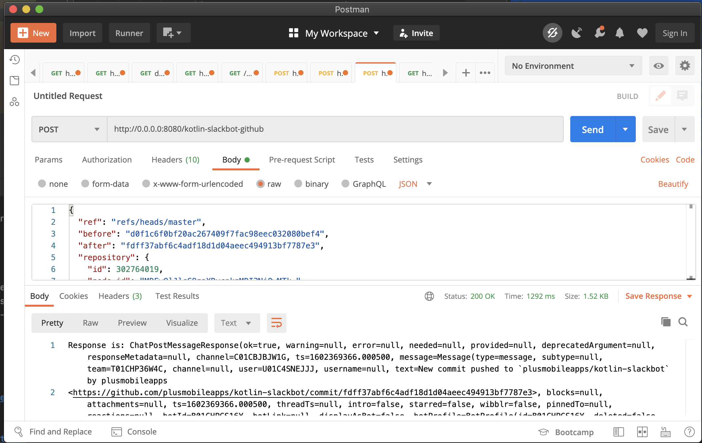
After everything is working locally, go ahead and deploy to Heroku. The end result of the message posted to Slack whenever a commit is pushed to the repository!
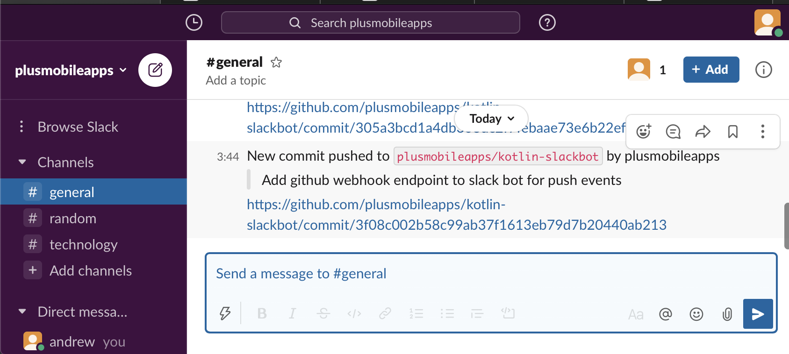
Prevent blocking thread
Before we are done, if you look closely at the posting of the message there is a warning from the IDE that there is an inappropriate blocking method call. Since Ktor uses coroutines, the easiest solution to fix this is to simply move this call off of the original thread using withContext() and indicating which Dispatcher this should be run on.
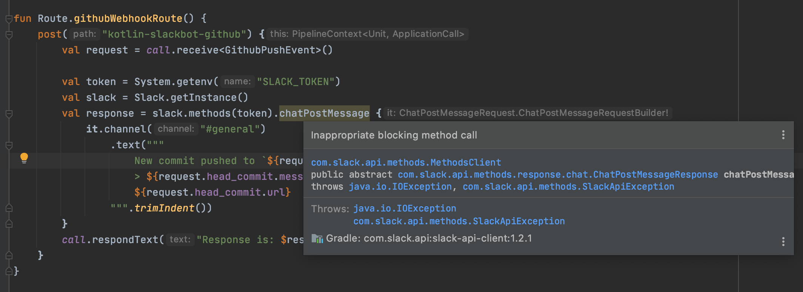
fun Route.githubWebhookRoute() {
post("kotlin-slackbot-github") {
...
val responses = mutableListOf<Any>()
withContext(Dispatchers.IO) {
val response = slack.methods(token).chatPostMessage {
it.channel("#kotlin-slackbot")
.text(
"""
New commit pushed to `${request.repository.full_name}` by ${request.pusher.name}
> ${request.head_commit.message}
${request.head_commit.url}
""".trimIndent()
)
}
responses.add(response)
}
call.respondText("Response is: $responses")
}
}
Now the warning is gone and the application will no longer be blocking the main thread when the endpoint is hit.
Conclusion
In conclusion, we have created a Slack application using Kotlin, Ktor, and Heroku that can listen to webhook events and post messages to our Slack. Everything done here can be found in the Github repository. We just scratched the tip of the iceberg in this article, but the Slack API is very powerful and encourage you to explore all of the different methods you can use to create a powerful Slackbot. Happy coding!